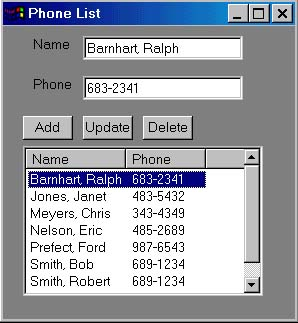

What is wxPython
As an alternative to Tkinter, there is an interface available to adapt the wxWindows package to Python. The interface, appropriately enough, is called wxPython.
wxWindows is a C++ package that runs on both Windows and Unix and lets you build GUI programs with a very native look and feel on each platform. Here is what our program will look like under Windows 98.

Tkinter is certainly very object oriented with windows and widget objects created, customized and positioned by your code. Your code itself, however, can be completely procedural. In fact this is exactly how the previous program was constructed. The function makeWindow assembled all the pieces including callback functions for the buttons. Then the mainloop method of the window was called passing control to the window itself.
With wxPython programs are built using inheritance. Your application program is a subclass of a generic application class (wxApp) and windows (or frames) are subclassed from a generic wxFrame. Our makeWindow function essentially becomes the __init__ method of our Frame class. Button callback functions become methods within our class.
In my opinion we get a more organized program but at a cost. It seems a good deal harder to play with the pieces at the interactive prompt than it was with Tkinter. Instead, one starts building a bare-bones application and frame class and then testing it. Then, as it is working correctly, one adds more and more to the frame class filling it in.
Comparing the code
At this point it is probably a good idea to get a printout of the wxPython code. in order to compare it to the Tkinter GUI program.
A basic application class is pretty much boilerplate code. Each application subclass must have an OnInit method which instantiates one or more windows (frames) and selects one to be active and shown on top. If only one frame is created this code is very straight forward.
class MyApp (wxApp) : def OnInit (self) : frame = MyFrame(NULL, -1, "Phone List") frame.Show(true) frame.setSelect() self.SetTopWindow (frame) return true
Within MyApp we create an instance of a MyFrame object and then show it, select it for focus and make sure its the top window. Notice that we have no __init__ method in MyApp. The __init__ method of the parent class, wxApp, is used instead and it calls OnInit (among other things).
Our skeletal frame (window) is built with the following.
class MyFrame (wxFrame) : def __init__ (self, parent, ID, title) : wxFrame.__init__(self, parent, ID, title, wxDefaultPosition, wxSize(300,325))
The __init__ method takes 3 arguments. Looking at call above in OnInit, we set parent to NULL (meaning no parent), ID to -1 (use a default), and the title to "Phone List". These 3 arguments are passed to the frame initializer along with size and position.
Size and position arguments are passed as 2 element tuples in wxPython, specifying x and y pixel or "dialog" values. The value -1 tells wxPython to use a default value. wxPython has functions that let us use nicer notation that just translates back to simple tuples. We can observe this at the command prompt.
>>> print wxDefaultPosition (-1, -1) >>> print wxSize(300,325) (300, 325) >>> f = wxFrame(NULL,-1,"test") >>> print wxDLG_SZE(f,100,100) (200,200)
The function wxSize simply passes the tuple through. But wxDLG_SZE is a bit different. It translates an x/y size depending on the frame passed. wxDLG_PNT is similar. Using these functions lets your program behave the same way even with different screen resolutions.
The Controls
Our window will contain lables, buttons (and their callbacks), text entry boxes, and a list control. We saw each of these in Tkinter and now we'll look at their counterparts in wxPython.
To keep things simple we are going to use absolute positioning in our wxPython version of the phone list program. This is done by simply giving the position (with wxDLG_PNT) and the size (with wxDLG_SZE), although wxPython has facilities similar to "pack" and "grid" in Tkinter.
Labels in Tkinter were simply a bit of geometry and text and the same is true with wxPython. Only the name has been changed. The frame class contains a method to add a label. Being a method it takes the first argument "self". The second argument is id number which can be ignored (defaulted). Then comes the text in the label and its position in the frame.
wxStaticText(self,-1,"Name",wxDLG_PNT(self,15,5))
Entry widgets need a both a position and a size and a way to get text into or out of them. With Tkinter the latter is done by tying the widget to a StringVar object and then getting and setting its value. Here wxPython is a bit more straight forward.
name = wxTextCtrl(self,12,"",wxDLG_PNT(self,40, 5),wxDLG_SZE(self,80,12)) name.SetValue("Muggs, J. Fred") print name.GetValue()
Here we used the id value of 12 and would use this id to tie events in the text control to another method. We'll see how this works with buttons.
Button widgets need a name (title), size and position, and a callback function (or method) to invoke when clicked. Here wxPython is a little less straight forward than Tkinter. It is necessary to give each button an id number and then that id number is linked to a method in the class. In the following case, the id is 11.
wxButton(self,11,"Add", wxDLG_PNT(self,10,45),wxDLG_SZE(self,25,12)) EVT_BUTTON(self, 11, self.addEntry)
Finally, we come to the list box and its scrollbar. We need functionality to delete the contents, insert rows with one or more columns, and access a user selection. With wxPython this is pretty straight forward. The scroll bar incidentally comes for free here whereas in Tkinter it was a seperate widget "married" to the list box.
self.lc = wxListCtrl(self,15,wxDLG_PNT(self,10,60),wxDLG_SZE(self,120,75), style=wxLC_REPORT) EVT_LIST_ITEM_SELECTED(self,15,self.getSelect)
Here our list control is given an id of 15 and positioned and sized. The style parameter means we'll have columns with headings in the control. The second statement ties the callback method "getSelect" to the list control. It is called whenever an entry is clicked.
self.lc.InsertColumn(0,"Name") self.lc.InsertColumn(1,"Phone")
Columns in the list control are set up just once. They are given a column number starting with zero and text for the heading.
self.lc.InsertStringItem(row, name) self.lc.SetStringItem(row, 1, phone)
Two calls are used to set information in a row. InsertStringItem inserts a new row and fills column 0. Other columns in the same row are filled with SetStringItem.
Finally, when the call back method is called with an event object, the attribute m_itemIndex contains the row clicked.
def getSelect (self, event) : self.currentSel = event.m_itemIndex
The complete program
Armed with the above you are ready to tackle the code and by comparing it with the Tkinter version have everything come together. The last thing needed is to create an instance of our application class and set it running by calling its MainLoop method.
app = MyApp(0) app.MainLoop()